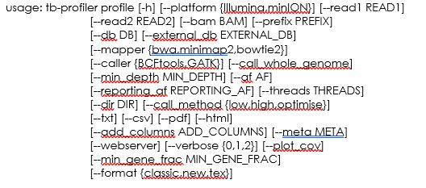
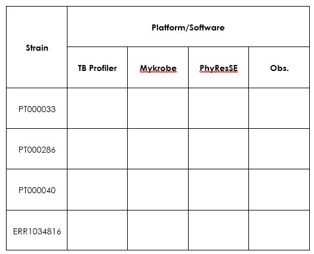
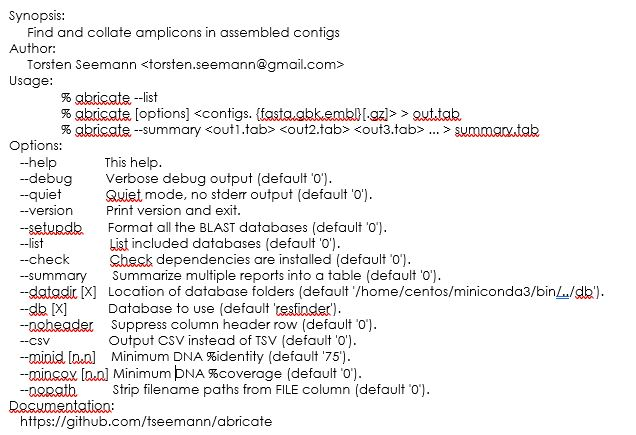
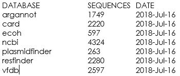
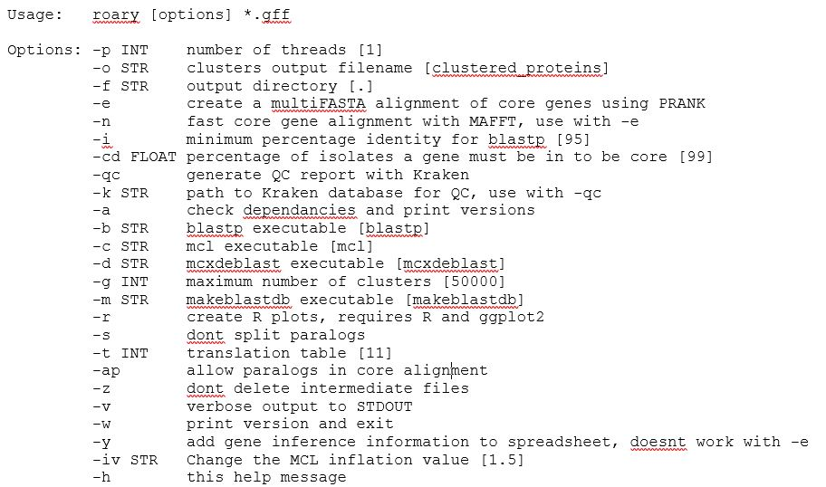

Click here to download the PDF version of this tutorial.
As NGS sequencing is becoming simpler and cheaper, increasing volumes of WGS data for bacterial pathogens such as M. tuberculosis are being generated. However, a significant part of the existing bottleneck lies within the analytical stage and the challenge for clinical and public health laboratories in accessing, extracting and interpreting the relevant and meaningful information. To bridge this gap, over last years several tools have been developed and described aiming at an audience with limited bioinformatic skills. These resources are, foremost, dedicated to the prediction of drug resistance from sequence data although other tools aiming at a genotypic characterization have been described as well. While some of these tools have also been deployed on an online server thus enabling easy access using a Guided User Interface (GUI) and remote analytical processing. Some mere examples of such tools for Tuberculosis:
• TBprofiler – enables drug resistance prediction, (sub)lineage assignament from raw read data. Features an online version and a standalone, locally deployable, command-line version;
• PhyResSE – uses the same philosophy as TBprofiler and also reports strain lineage and antibiotic resistance;
• Mykrobe Predictor – also reporting drug resistance and lineage from reads, this software runs locally;
• SpoTyping and Spolpred – these two tools report the spoligotyping profile from read data. Spotyping can query SITVIT database for SIT/Clade assignement for the obtained profile;
The downside of these tools is the limitation, to different degrees, of customizing the pipeline and the analytical workflow in case there is the need to perform additional steps or different parameters. Also, the caveat to the use of these resources also lies in the need for the critical interpretation of the results that are obtained.
In addition, other tools of more general use are also available for other pathogens, envisaging the detection of plasmid replicons, drug resistance genes and even for the analysis of the gene content across the core/pan genomes. This enables rapid extraction of important genotypic data that can be of clinical or epidemiological importance.
This module will cover the use of selected available tools as examples for the plethora of tools already made available and maintained by the scientific community. Some of these tools are presently implemented or being across diagnosis or public health microbiology laboratories worldwide.
This first exercise will be focused on obtaining spoligotyping information from raw sequence data. Two available tools Spolpred and Spotyping can be used for this end, both rely on the identification of specific regions called spacer regions in the Direct Repeat locus. Basically it an in silico version of what is carried out in the lab using the classical methodology: 43 probes will be used to check the presence/absence of these regions as originally described by Kamerbeek et al in 1997! However, herein, these will be “in silico probes” and since the sequence length of these probes is 25 nt this can even be applied to early protocols of NGS sequencing generating 36 bp reads.
As mentioned, both Spotyping and Spolpred screen the query sequence reads against a probe database. The screening method differs with Spotyping being based on BLAST search and therefore faster than Spolpred. Both methods are valid and for the sake of speediness we will proceed with Spotyping.
Spotyping is written in Python programming language. However, it requires Python 2.7 to operate correctly. Let’s check our python version:
$ python -V
Which Python version do we have?
Probably you noticed that we have Python 3.7 installed and, while this is a more updated version there are some differences. To facilitate, he Spotyping.py script has been modified with the following line of text right in the beginning:
#!/usr/bin/python2
Python 2.7 is still installed but the command is now python2 and is in /usr/bin/. Regardless, this first line added to the Spotyping script automatically tells the system which interpreter is required for the script. So just type:
$ SpoTyping.py
You can notice that it outputs the usage, to know more:
$ SpoTyping.py -h
Take some time to read the different options.

Now, from your home directory go to Module3 directory:
$ cd Module3
It is enough to use one of the paired-end files. Copy the first one to this directory…
$ cp ../course_files/PT000033_1.fastq.gz .
Done? Now, let’s start in silico spoligotyping! Type:
$ SpoTyping.py PT000033_1.fastq.gz -o PT000033_1.out
It should take a minute or so to complete. Once it does check the files in the directory. There is a log file, the output file and an excel spreadsheet with the results from SITVIT query.
To see the profile just type:
$ more PT000033_1.out
Now have a look at the spreadsheet and at the log file. What do you see?
In the end, what SIT and clade does this strain belong to? Is it expected in Portugal?
Feel free to try with other strains in the course files directory. What do you find?
Next exercise! Let’s go for resistance prediction! We will start with Mykrobe Predictor.
$ conda activate mykrobe $ mykrobe predict PT000033 tb -1 PT000033_1.fastq.gz > PT33.csv $ conda deactivate
This will run the Mykrobe Predictor pipeline using the tb database. Notice the tb argument. The latter is of special importance as Mykrobe Predictor also does AMR prediction for Staphylococcus aureus, which uses the staph parameter instead. In this exercise we will use only one set of reads and as soon as the pipeline completes the results will be in the PT33.csv file which can be opened with LibreOffice Calc in this virtual machine. That option is available if you right click the file. Also, there is an option that you can explore if you are interested which is to output the results to a JSON file which provides extra information in a hierarchically structured fashion. Can you find out what is the argument for that?
Well, once it completes you can check the results. In the meanwhile, within the course_files directory there are three compressed FASTQ files from three strains that we haven’t covered yet:
• PT000040 (PT000040_1.fastq.gz)
• PT000286 (PT000286_1.fastq.gz)
• ERR1034816 (ERR1034816_1.fastq.gz)
Copy the respective FASTQ files for the working directory of this module and process these with the Mycrobe Predictor pipeline:
$ conda activate mykrobe $ mykrobe predict PT000286 tb -1 PT000286_1.fastq.gz > PT286.csv $ mykrobe predict PT000040 tb -1 PT000040_1.fastq.gz > PT40.csv $ mykrobe predict ERR1034816 tb -1 ERR1034816_1.fastq.gz > ERR1034816.csv $ conda deactivate
Once it completes you can check the results in the CSV files!
Let’s switch to an alternative tool! We will use TB-Profiler which also reports drug resistance and (sub)lineage. The command-line version of TB profiler has different functionalities depending if you want to collate the results of previous runs, carry out the complete pipeline or, execute the pipeline for VCF files. We will use the profile function which carries out all the pipeline including mapping and variant calling. It is also possible to skip the mapping stage if you already possess a BAM file. In that case you use the BAM file as input instead of raw reads. Take a moment to look at the help page by typing:
$ conda activate tb-profiler $ tb-profiler profile -h
Something like this will show up:
But, time to start profiling. Let’s start with the PT000033 reads. Type the following:
$ tb-profiler profile -1 PT000033_1.fastq.gz -p PT000033 --txt --csv
You could eventually use a second FASTQ file containing the read-pais or, as mentioned, use the -a argument and a BAM file. Notice the -p argument, it defines the prefix for the result files. By default, TB Profiler outputs results in a JSON format, you can add the --txt and –csv argument so that the program also outputs a TXT and CSV result files, depending on your preference and subsequent file utilization.
In the meanwhile, as TB Profiler runs, look at the commands. Noticing anything familiar?
As soon as TB Profiler completes you can check the results outputted to the results folder.
Before you go and look at them let’s also run the TB profiler pipeline for the other strains as it will take some time:
$ tb-profiler profile -1 PT000040_1.fastq.gz -p PT000040 --txt –csv $ tb-profiler profile -1 PT000286_1.fastq.gz -p PT000286 --txt –csv $ tb-profiler profile -1 ERR1034816_1.fastq.gz -p ERR1034816 --txt –csv $ conda deactivate
Now that you have run reads from different clinical isolates it is time to compare the results. Please fill in the following table:
Tip: For the PT strains you can check the phenotype at http://cplp-tb.ff.ulisboa.pt.
As an alternative to the command-line versions you can also check PhyResSE and TGS-Tb which also perform AMR prediction for TB. These two platforms are web-based. You can open the browser and upload the data. Warning: this analysis takes some time, but if you choose to do it try first PhyResSE as TGS-TB is now relying on TB Profiler and will likely show you the same results you have obtained here.
What are your conclusions?
Now that we have introduced some specific tools for M. tuberculosis let’s switch to more general tools. In the following exercises we will be using draft genome assemblies as input (before contig ordering and scaffolding) that you can obtain by following the exercises and steps in Module 2. So, the input will be a simple multifasta file containing multiple contigs. These exercises can also be completed using finished chromosome sequences that, e.g., can be found available in public databases.
Also, the assemblies used in this exercise can be obtained with any assembler provided your input is in the fasta format. That is the sole requirement!
In this first exercise we will aim at finding the genetic determinants for resistance in genome assemblies from Klebsiella pneumoniae. Inside the Module 4 directory there is a sub-directory called Kp_assemblies, inside you can find four fasta files each from a different strain (Kp1-Kp4).
There are different tools available for detection and characterization of the genetic determinants, some implemented in online servers with a graphical interface. By now you should be accustomed with these command-line tools which allow for a more precise parametrization and can be deployed into programmatic use in a pipeline or to large datasets.
Now, all the tools we will now use rely, in one way or another, on BLAST tools. The VM you are using has all BLAST tools installed and allow you to run these locally. As such, these tools end-up by acting as BLAST parsers with some additional features.
The most important caveat to take in account here: these tools are only as good as the databases that are associated. What does it mean? It is useless to be looking for OXA-181 carbapenemase coding genes or the mrk gene clusters if the database does not have those. Also, the annotation of the genes in the database will allow you to integrate additional.
Enough with the talk and let’s do some practical work. We will start by using AMRFinderPlus, which implements blastx that takes nucleotide sequences as input and searches across a protein database. This will be the way to go if you need to identify specific alleles (e.g. KPC-2 vs KPC-3) of different resistance genes which only differ in the amino-acid sequence. Doing blastn (nucleotide blast) may also work but it may lead to the wrong identification if synonymous mutations are present. The downside is that this tool is somewhat slower, but it draws all of its database from the NCBI curated database of AMR determinants.
Let’s try!
$ cd ~/Module3
$ cd Kp_assemblies
# You can try the following:
$ amrfinder --nucleotide Kp1.fasta --plus
# This will output to the screen. It is best if you redirect to a file:
$ amrfinder --nucleotide Kp1.fasta --plus > Kp1_amrfinder.tsv
$ amrfinder --nucleotide Kp2.fasta --plus > Kp2_amrfinder.tsv
$ amrfinder --nucleotide Kp3.fasta --plus > Kp3_amrfinder.tsv
$ amrfinder --nucleotide Kp4.fasta --plus > Kp4_amrfinder.tsv
$ amrfinder --nucleotide Kp5.fasta --plus > Kp5_amrfinder.tsv
# Notice the .tsv extension, it just informs you that this is a tab separated value file.
Now, why is it called AMRFinderPlus with the “Plus”? Plus what? In addition to resistance genes if you add the --plus argument (which I hope you did) it will also screen for metal resistance genes, resistance to biocides or a limited number of known virulence genes.
You can examine the output files using the cat or the more commands or you can open those in LibreOffice Calc. Just right-click and select open with LibreOffice Calc.
Look at the files. Do all bear genes capable of hydrolysing carbapenems? And Extended Spectrum Beta-Lactamases?
Notice there are columns for the identity and coverage. What would be good cut-offs here?
__________________________________________________________________________
Optional:
Check, for example, if there are resistance genes mapping to the same contig in Kp?
What are the consequences?
Next, we will use another tool that although capable of detecting resistance genes it is specifically developed for Klebsiella and the determination of the Sequence Type (MLST) capsular locus and O antigen locus.
# Try the following $ kleborate-runner.py --all -a Kp1.fasta # As in the previous example, this will output to the screen. With the following command you can do all files at once and redirect to the same file: $ kleborate-runner.py --all -a *.fasta -o kleborate_results.tsv # Notice the .tsv extension, this is also a tab separated value file.
Let’s examine the output of Kleborate. Besides species identification and assembly statistics, the output contains:
• ST
• Virulence and resistance scores
• Presence/absence of specific virulence genes
• K Locus type
• Antigen O type
• AMR genes
You should look at the online Kleborate Github/Wiki page to check any doubts you might have considering the output (https://github.com/katholt/Kleborate/wiki).
Do all these strains belong to the same ST? Do you see any difference regarding drug resistance genes across strains that belong to the same ST? Does that reflect at K and O loci?
The final exercise for this module will make use of another tool called Abricate (author: Torsten Seemann) which already comes with a diversity of databases.
$ cd ../Ec_assemblies # Try the following $ abricate
You will get something like:
Notice that the default database comes is the resfinder one and, as such, if you don’t select for a different one you will get the resistance genes.
To find out which other databases are available do the following:
$ abricate --list
This will show the following:
Notice that these databases that come with abricate are somewhat outdated and in a real-life situation you should check if these databases have newer versions.
Another neat aspect of abricate is that it allows for you to add additional databases. You just need to have the the sequences that need to be searched, formatted in a fasta format, and you can include those in the software by following online instructions.
We will test this on another set of assemblies. Inside the Module4 directory, besides the Kp_assmblies there is also a Ec_assemblies sub-directory. The latter contains two E. coli assemblies. We will screen for plasmids and virulence factors using the plasmidfinder and vfdb databases respectively.
$ abricate --db plasmidfinder Ec1.fasta > Ec1_plasmidfinder.tsv $ abricate --db plasmidfinder Ec2.fasta > Ec2_plasmidfinder.tsv $ abricate --db vfdb Ec1.fasta > Ec1_vfdb.tsv $ abricate --db vfdb Ec2.fasta > Ec2_vfdb.tsv ## Instead, if you prefer csv files you can try adding the --csv option.
Abricate offers another neat function to compare across result files:
$ abricate --summary Ec1_plasmidfinder.tsv Ec2_plasmidfinder.tsv > plasmids_summary.tsv $ abricate --summary Ec1_vfdb.tsv Ec2_vfdb.tsv > vfdb_summary.tsv ## Beware that the values in the cells is the coverage, you lose the percentage identity. You might want to set initial thresholds using the --minid and --mincov options. The drawback is that for plasmids this can vary…
Let’s test for virulence factors:
$ abricate --db vfdb --minid 90 --mincov 60 Ec1.fasta > Ec1_vfdb_filtered.tsv $ abricate --db vfdb --minid 90 --mincov 60 Ec2.fasta > Ec2_vfdb_filtered.tsv $ abricate --summary Ec1_vfdb_filtered.tsv Ec2_vfdb_filtered.tsv > vfdb_summary_filtered.tsv
Tips: Notice that the -cd option controls the percentage of isolates a gene must be in to be in the core set (by default 99%). You can tweak this a bit but also be mindful that you need to have a larger dataset to notice any differences.
This optional exercise uses the Roary pipeline for calculation of the pan genome across a set of samples. As input Roary takes GFF3 files which are annotation files (you may recall these from Module 2), ideally produced by Prokka.
Take a look at roary’s options:
You may have noticed that multiple options are available and besides the analysis of the pan-genome, roary can also produce a core genome alignment. Depending on the approach which can be useful for the phylogenetic analysis module in this course.
We will use the GFF3 files produced by Prokka for Kp2, Kp4 and Kp5. Why? These represent ST15 strains detected in Portugal, but each has a different resistance enzymes. So, what genes are common between strains and which are not?
$ cd ~/Module3/Kp_gff
$ conda activate roary
$ roary -v -f Kp_pan *.gff
# The -v switches on the verbose mode so you can keep track of what is going on.
# Alternatively, you can produce a core genome analysis but this will take longer (~1h) and will not be suitable to do in teaching sessions as it will align all genes individually:
$ roary -e --mafft -cd 99 -f Kp_core -r -v *.gff
# A folder containing the results is provided for the previous command.
$ conda deactivate
You can look at the roary’s documentation online to check the output files and what these contain. Let’s look at the summary_statistics.txt and the gene_presence_absence.csv files. This latter one can be opened in LibreOffice Calc for easier visualization.
Anything interesting? What are the total genes across this toy dataset and how many genes are core genes (99-100% presence)?
In the Kp_core folder [core genome analysis] there is a core_gene_alignment.aln file which can be used for phylogenetic purposes and comparison of clonality between isolates. You can reduce this alignment to the segregating sites using snp-sites:
# Let’s switch to another directory containing more GFF3 files with the output of a Roary core genome analysis:
$ cd ~/Module3/Kp_gff2/Kp_core
Look at the core_gene_alignment.aln
$ nano core_gene_alignment.aln
# press CTRL+X to exit.
# Now try:
$ snp-sites -o core_gene_alignment_segregant.aln core_gene_alignment.aln
# This will output the core_gene_alignament_segregant.aln file. You can see that it is considerably smaller.
<<-HOME